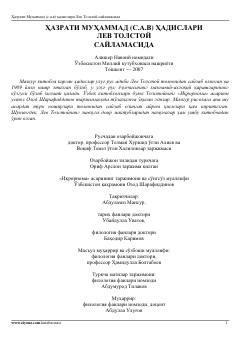

HMLev Tolstoy tanlagan Hazrati Muhammad (s.a.v.) hadislari va adibning diniy-axloqiy qarashlari.
Mazkur kitob buyuk rus adibi Lev Tolstoy tomonidan tanlab olingan va 1909 yilda nashr etilgan Hazrati Muhammad (s.a.v.) hadislarini o'z ichiga oladi. Risola adibning ma'naviy-axloqiy qarashlari, din va e'tiqod haqidagi o'ylarini ochib beradi. Shuningdek, asar tarkibiga Tolstoyning «Iqrornoma» asaridan parchalar va mavzuga doir maktublar kiritilgan.